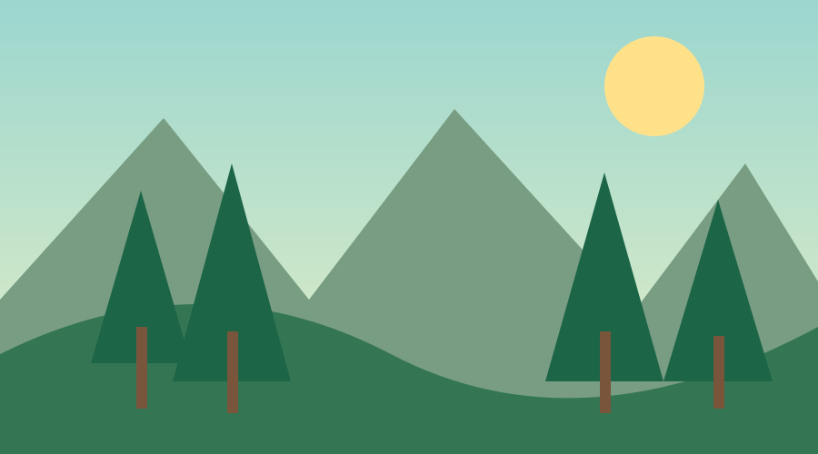

De ce este importantă natura?
Natura menține echilibrul vieții pe Pământ. Pădurile, oceanele, râurile și solurile susțin ecosisteme complexe și ne oferă resurse esențiale.

Probleme de mediu
Poluarea
Deșeurile și gazele nocive afectează aerul, apa, solul și sănătatea viețuitoarelor.
Defrișarea
Tăierea excesivă a copacilor distruge habitate și reduce capacitatea pădurilor de a absorbi dioxidul de carbon.
Schimbările climatice
Creșterea temperaturii globale influențează vremea, ecosistemele și comunitățile umane.
Comparație: surse de energie
| Sursă | Regenerabilă? | Avantaj | Dezavantaj |
|---|---|---|---|
| Solară | Da | Folosește lumina soarelui | Depinde de vreme |
| Eoliană | Da | Nu produce emisii în timpul funcționării | Necesită vânt |
| Hidroenergie | Da | Poate produce multă energie | Poate modifica râurile |
| Cărbune | Nu | Ușor de depozitat | Poluează puternic |
| Petrol | Nu | Utilizat pe scară largă | Emite gaze cu efect de seră |
Reguli simple pentru un mediu mai curat
- Refolosește obiectele atunci când este posibil.
- Plantează copaci și îngrijește spațiile verzi.
- Alege produse cu ambalaje mai puține.
- Participă la acțiuni de curățenie.